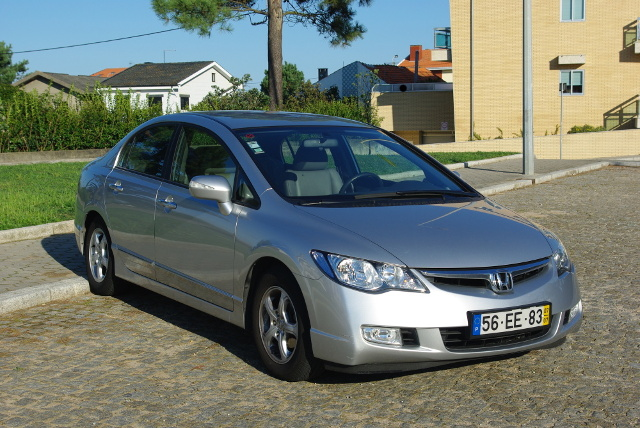
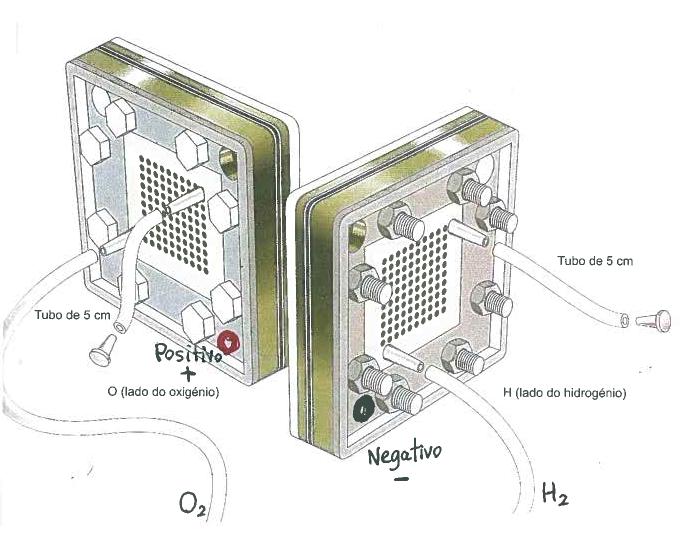
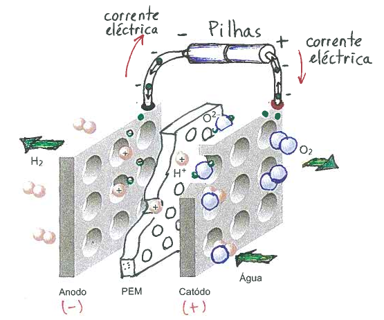
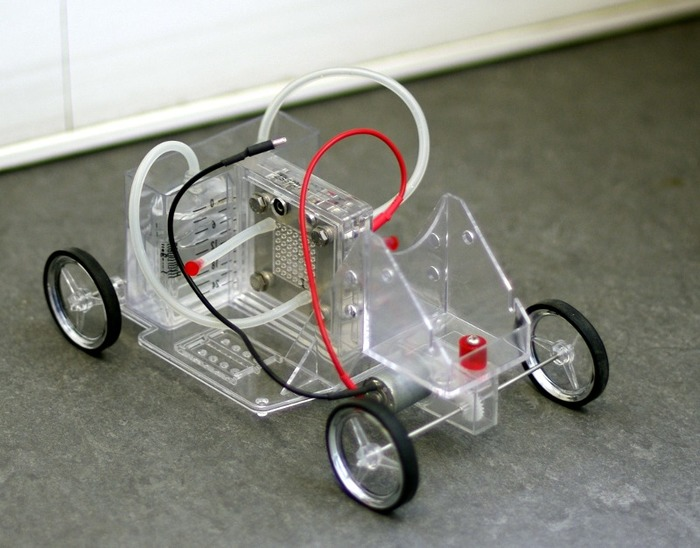
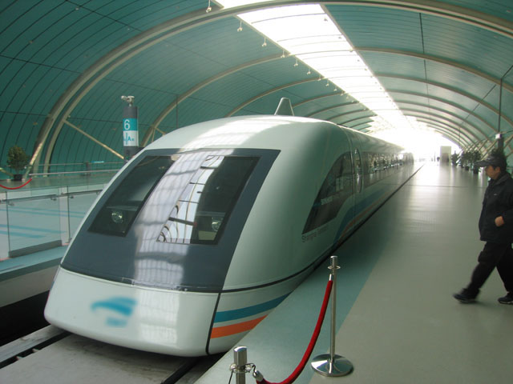
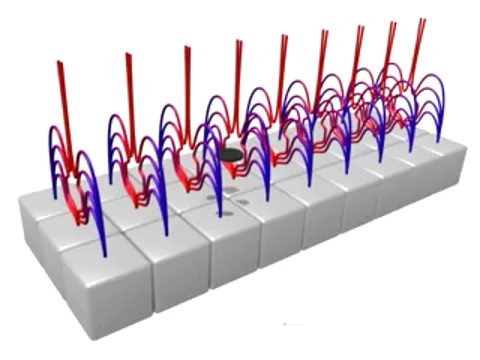
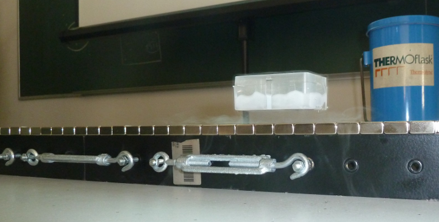

Palestra dada no agrupamento de Escolas Lima-de-Faria, no 2 de Maio
de 2017
Motores para automóveis

Gasolina
Eficiência: <20%. Densidade de energia: 50 MJ/kg de
combustível.
Polui a atmosfera.
Diesel
Eficiência: ≈30%. Densidade de energia: 50 MJ/kg
de combustível.
Polui a atmosfera.
Elétrico
Eficiência: ≈70%. Densidade de energia: 2
MJ/kg de bateria.
Não polui a atmosfera mas produz resíduos sólidos tóxicos.
Hidrogénio
Eficiência: >50%. Densidade de energia: 145
MJ/kg de combustível.
Não polui; o único resíduo é vapor de água. Longa duração.
Células de hidrogénio
Membrana PEM (Proton Exchange Membrame) deixa passar unicamente
os protões do hidrogénio, ficando os eletrões (carga negativa).

Os protões que passam pela membrana combinam-se com
moléculas de oxigénio, ficando água ionizada positivamente.

Obtenção de H2 e O2 com a célula

Cátodo: Os protões das moléculas de H2O atravessam a
membrana, ficando moléculas de O2.
Ânodo: Entram protões através da membrana, formando
moléculas de H2.
Carro com depósito de água e célula de hidrogénio

Levitação magnética
Comboio Maglev (Magnetic levitation) em Xangai.

Supercondutores
Resistência nula, a temperaturas menores que a temperatura
crítica Tc.
Mercúrio: Tc aproximadamente −269
°C. Descoberto em 1911.
Ligas metálicas supercondutoras:. Com Tc
mais elevada. Descobertas na década de 1980.
YBa2Cu3O(6+x):
Tc de −180 °C (superior à temperatura do ar
líquido).
Pista de ímanes cúbicos

A linha do meio tem pólos magnéticos opostos aos dos extremos criando
linhas de campo com uma depressão no meio.
Carrinho com discos supercondutores

O carrinho enche-se com ar líquido para tornar os discos supercondutores.
O campo magnético da pista induz corrente nos discos, originando campo
magnético oposto ao da pista, que faz levitar o carrinho.